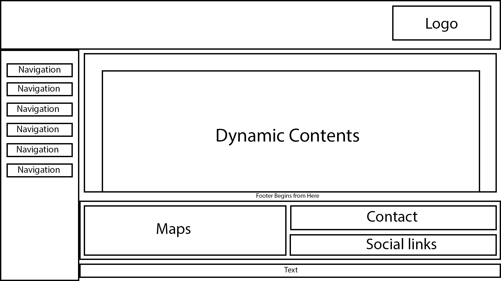
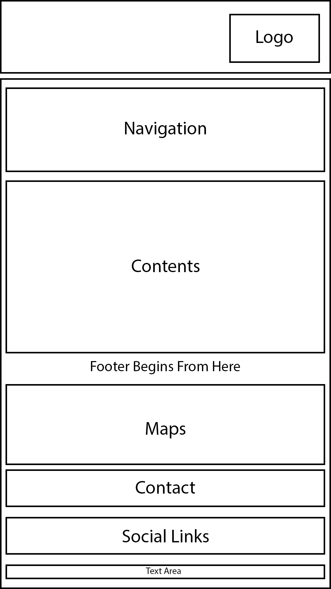

Introduction
Browsing a website always seemed so fun and I always thought that creating a website would be a easy task. It sure is easy to create a website but it isn't so easy to create a good website. Basically website can be created using HTML and CSS which is what this assignment is based on. We can add extra features using javascript but no marking is given to that.
This website is supposed to display portfolio in six different webpages: index.html, about.html, cv.html, social.html, models_gp.html and contact.html. The other requirement of the website is that it had to be responsive as lots of users use websites on different other devices.
During this assignment I had many confusions which were discussed with a friend and several references were taken with the help of search engines in order to achieve the design prepared in wireframe.
UI Design
User Interface is something a user interacts to navigate around the website. The design of the UI must be good in order to achieve a good website despite the contents of the website.
The inspiration for the design of the website can be taken from anywhere. I liked the design of the mail application of Microsoft's so I took the concept of my design from there. The navigation of the Mail app was in left sidebar and the contents were in the right side. There was no footer or header in the mail application so I had to create them myself. The header was not so hard to think of but I had to look up for designs of footer. So to create footer I took help from other websites and I thought it would be nice to add maps in the footer. With only maps the footer was still incomplete so I added my contact information and social links in the footer. I also made my website responsive by making the website fit into smaller resolutions without any design flaws.


These are refrences for the design of my website. I picked a different colour scheme for my website which is black, white and golden.
Wireframes
For Desktop

For Mobiles

Validiations
Index

About

Contact

CV

Social

CSS

For Responsive

Implementation
Following code were implemented.
HTML

CSS

Conclusion
After completing this assignment I conclute that creating wep page takes time and patience. Although this assignment difficult it was fun doing this.
Refrences
w3schools () HTMl Google Maps. Available from: https://www.w3schools.com/html/html_googlemaps.asp [Accessed 16 April 2018]
Dan's Tools () Copperplate CSS Font Stack. Available from: https://www.cssfontstack.com/Copperplate [Accessed 16 April 2018]